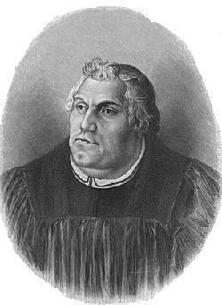
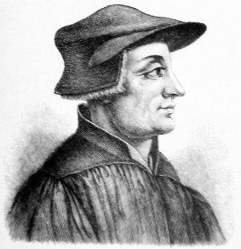
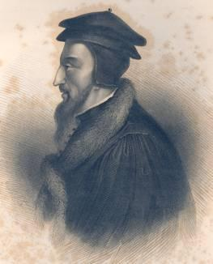
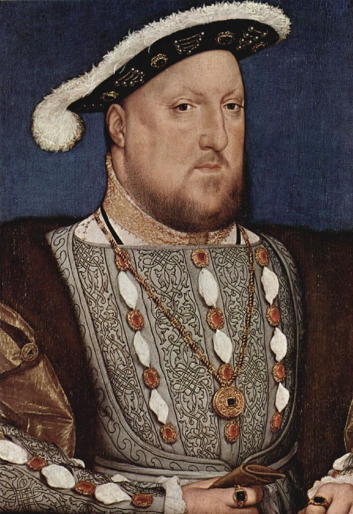

9) Reformasyon > Calvincilik > Rasyonalizm > Laiklik
“Kilise sadık kişiler topluluğudur. Roma Kilisesi onunla özdeş değildir, ve bu Hristiyan topluluğu, Roma Kilisesi’nden bağımsız olarak var olabilir.”
Ockhamlı William (1288-1348)
nceki bölümlerde, üç akımdan ikisine değinmiştik. Bu iki akım, Rönesans ve Aydınlanma, Max Weber’e göre Batı dünyasını, rasyonalizm ve toplumun iyileştirilmesi ölçüsünde diğer kültürlerden çok daha uzağa götürmüştür. Teoloji Devrimi üzerine olan bu bölüme, Weber’in üçüncü akım Reformasyon’u ele alarak başlayacağız.
Kendisinden önce gelen Rönesans ve sonrasında Fransız Devrimi’yle beraber Reform Hareketi, modern Batı tarihinde bu çağın ilerlemesini sağladı. Esasen Reform Hareketi, yüzyıllardır var olan ve Batı Hristiyan Alemi’nde Papa’nın Kilise üzerindeki egemenliğine son veren doktrinsel, siyasi ve ekonomik koşullara karşı, 16. yüzyılda gerçekleşen önemli bir dini başkaldırıydı.
Orta Çağ Avrupası’nın siyasi gücü, büyük ölçüde, imparatorlar ve papalar arasındaki üstünlük mücadelesinden yararlanır. Ortaya çıkan ulus devletler papalık vergisine ve uzak mesafelerde, hatta yurt dışında bulunan kilise yetkililerine boyun eğme zorunluluğuna karşı çıktılar. Yoksullaşan köylülerden, devletlerde yeni taç giyen kişilere kadar, neredeyse hemen herkes çok sayıda olan kilise yetkililerinin cehaletini, açgözlülüğünü ve ahlaksızlığını eleştiriyordu. Pek çokları ise kilisenin vergilendirilmeyen büyük malvarlığına –Avrupa’nın neredeyse beşte birini ya da dörtte birini oluşturan arazilere– göz dikmişti. Avignon’da yaşayan papaların “Babil Tutsaklıkları” da alaya alınıyordu. Kilise yetkililerinin kendileri de değişimin gerektiğini anladılar. Konstantz Konseyi’nde (1414-1418) pek çok farklı reform programı tartışıldı fakat, büyük bir oy çoğunluğuna sahip tek bir program olmadığı için, köklü değişimler gerçekleştirilemedi.
İngiliz reformcusu John Wycliffe, 14. yüzyılda, endüljansların satılmasını (papazların sattığı bir belge aracılığıyla, günahlara karşı Tanrı’nın cezalandırmasının kaldırılmasının sağlanması), haçlı seferlerini, azizlerin kutsal sayılmasını, papazların ahlak anlayışlarını ve zihinsel kapasitelerini eleştirdi. Sıradan insanlara ulaşabilmek için Latince değil, İngilizce vaaz etti. İncil’i de bu dile çevirdi. Wyclıffe büyük bir taraftar kitlesine sahip oldu. Öğretileri, dini reformcu Jan Hus’un öğretilerini duyurduğu Bohemya ve Macaristan’a da ulaştı. Hus’un 1415’de infazı, Reformasyon’dan sonra Almanya’yı da içine çeken iç savaşların habercisi olan Husçular, savaşlarının çıkmasına neden oldu. Papalık ve yeni ortaya çıkan ulus devletler arasındaki güç dengesinin değişimi, bağımsız ulusal kiliselerin kralın yetkisi altında gelişmesine kapı açan bir dizi antlaşmadan da anlaşılabilir.
Birinci bölümde Rönesans’ın önemine ve 15. yüzyılda başlamış olan, klasik bilimlerde ve spekülatif araştırmalardaki uyanışa değinmiştik. O dönemde eski edebiyatın bağımsız alimler tarafından incelenmeye başlanması, bilimi kilisenin tekelinde olmaktan kurtardı. Bu, matbaanın da icadıyla Avrupa’da yeni fikirlerin yayılmasını hızlandıran büyük bir etken haline geldi. Fransa’da Jacques Lefèvre d’Étaples, Hollanda’da Desiderius Erasmus, Almanya’da Johann Reuchlin ve İngiltere’de Thomas More gibi hümanistlerin çalışmaları, Luther ve Calvin gibi Reformistlerin, kiliseden çok İncil’in dini otoritenin tek kaynağı olması ile ilgili iddialarına zemin hazırlamış oldu.
Reformasyon’un ortaya çıkma tarihin genellikle, Alman keşiş Martin Luther’in 95 maddesini Wittenberg’deki kilisenin kapısına çivilediği tarih olan 31 Ekim 1517 olduğu kabul edilir. Bu maddelerde Luther, diğer noktalarla beraber, endüljans ilkelerini ve uygulanmasını eleştirmişti. Kilise yetkililerinin Luther’den geri adım atmasını ve kendi yetkilerine boyun eğmesini istemelerine rağmen, Luther bu konuda giderek daha da ısrarcı davranmıştır. Sakrament sistemine karşı çıkmaya başladı, kiliseden reform talep etti. Gerçek dinin İncil’in öğretilerine dayanan kişisel bir imandan ibaret olduğunu öğretti. Bir papalık kararnamesini herkesin önünde yakınca, tüm yasal haklarının elinden alınacağına bir işaret oldu. Bu olay sonucunda Roma Katolik Kilisesi’nden ayrılmasına neden oldu. 1521’de dönemin “Kutsal Roma İmparatoru” olan V. Charles, Alman prensleri ve kilise yetkilileri, Worms şehrinde bir araya gelerek Luther’e davasından vazgeçmesini söylediler. Luther şöyle diyerek bunu reddetti,
Kutsal Yazılar benim yanlış olduğumu göstermiyor; sizler de yaptığınız suçlamalar için mantıklı bir açıklama yapamıyorsunuz (papaların ya da konseylerin dayanıksız yetkisine güvenmiyorum. Çünkü onların çoğunlukla hata yaptıkları ve kendilerine ters düştükleri çok açık). Ben hayatımı yöneten ve tutsağı olduğum bu Kutsal Yazılar’a dayanarak yaşıyorum. Bu yüzden sözlerimin hiçbirini geri almıyorum. Çünkü vicdanımıza karşı hareket etmek bizim için güvenli değildir. Tüm söylediklerimin arkasındayım. Başka türlü davranamam. Tanrı yardımcım olsun (Houghton 1980:89).
Luther, kanun kaçağı ilan edildi ve bir sene boyunca saklanarak yaşadı. Bu süre içerisinde İncil’i Almanca’ya çevirdi. Kendi ilkelerini anlatan risaleler hazırladı. Yazdığı şeyler yasadışı olsa da, açık bir şekilde satılıyordu. Bu yayınlar Alman halkını Lutherciliğe döndürmeye yarayan güçlü bir kaynak oluşturmuştu. Wittenberg’e döndüğü zaman devrimci bir önder olarak karşılandı. Kuzeydeki Alman prensleri, sıradan papazlar, tüccarlar ve köylülerin büyük çoğunluğu kendisini destekledi. Fakat, o dönemdeki durumu koruma kaygısı taşıyanlardı, imparator, yüksek sınıfa mensup papazlar, güneydeki prenslerin büyük çoğunluğu Katolik Kilisesi’ni destekledi. 1524’te, köylü sınıfının aracılığıyla ekonomik durumu geliştirmeyi amaçlayan Köylü Savaşı çıktı. Luther, onları şiddete başvurdukları için ciddi bir şekilde kınadı. Köylüler bir sonraki yılın prensi tarafından yenilgiye uğratıldılar.
Roma Katolikleri ve Lutheranlar arasındaki bölünme daha da büyüdü. 1526’da Speyer Meclisi’nde bu iki taraf, Lutheran’lığı uygulamak isteyen söz konusu Alman prenslerinin, bunu yapmakta özgür oldukları konusunda anlaşmaya vardılar. Fakat, bu anlaşma üç yıl sonra bozuldu. Bu duruma Lutheranlar’ın karşı çıkması, kendilerinin Protestanlar (yani, protesto edenler) olarak adlandırılmalarına neden oldu, bu terim daha sonraları Papalığa karşı çıkan bütün Hristiyan kolları için kullanıldı.
Fransızlar’la ve Türkler’le yaptığı savaş, 5. Charles’in 1546 senesine kadar ordusunu Lutheranlar’a doğrultmasını önledi, 1546’da Charles, Papa’yla birleşerek, Saksonya dükü Maurice’nin de yardımıyla, Protestan prenslerinin savunma birliği olan Schmalkaldener Bund (Schmalkalden Antlaşması)’ına karşı savaştı. Başlangıçta Roma Katolik güçleri üstünlük elde ettiler; fakat Dük Maurice saf değiştirince, 5. Charles barış yapmak zorunda kaldı. Savaş, Augsburg Barışı’yla (1555) son buldu. Bu barış yaklaşık üç yüz Alman devletinin, Roma Katolikliği ile Lutheranlık arasında kendi seçimlerini yapabileceklerini öngörüyor, kendi vatandaşlarının da seçim yapabilmesini sağlıyordu. Bu nedenle o tarihten sonra Almanya nüfusunun yarısının bağlı kaldığı Lutheranlık, sonunda resmi olarak da tanınmış oldu. Bu durum Batı Avrupa’da Papa’nın üstün yetkisi altında olan dini bütünlüğe, dönüşü olmayan bir şekilde zarar getirdi.
Luther ve diğer Protestanlar, Roma Katolik Kilisesi’yle, en önemlisi “yalnızca imanla aklanma” doktrini olan, pek çok önemli doktrinsel konularda yollarını ayırdılar. Protestanlar, kilisenin geleneklerine ve öğretilerine boyun eğmeye karşı, Tanrı’nın sözüne itaatle belli olan, yalnızca diri imana dayanan kurtuluş anlayışını savunuyorlardı. Bu, sadece Katolikler ve Protestanlar arasında değil, Protestanlar’ın kendi aralarında da, kilise anlayışıyla ilgili farklı görüşlerin ortaya çıkmasına neden oldu: Protestanlar, kilisenin belirli bir bölgedeki doğru öğretiyi kabul edenler için mi, yoksa sadece diri ve içten bir iman sergileyen insanlar için mi geçerliydi? Bu konuda, Luteranlar’la Reformistler, Vaftizcilerle Mennonitler birbirlerinden ayrılıyorlardı. Kilise yönetimi ve sakramentlerin (dini ayinler) efsanevi unsurlardan arındırılması gibi konular da anlaşmazlık sebebi haline gelmişti.
Luteranlık, kuzeye, İskandinavya’ya kadar süratli ve sakin şekilde yayılırken, Danimarka ve İsveç’teki kraliyet ailelerinin papalıktan ayrılmalarına neden oldu. Kral Gustav I Vasa’nın yönetimi altında bulunan İsveç, 1529’da Luteranlığı devlet dini olarak kabul etti. 1536’da Danimarka ve Norveç kralı Christian III, Luther’in arkadaşı Johann Bugenhagen’den Danimarka’da ulusal bir Luteran kilisesi oluşturmasını istedi.
İsviçre’deki reform hareketine Huldreich Zwingli öncülük etmiştir. Onun önderliğinde Zürih belediye meclisi dini yadigarların (relikler) yakılması, törensel uygulamalarda azizlere tapınılmasının kaldırılması, keşişlerin ve papazların bekarlık yeminlerinin iptal edilmesi, katı ekmek ve şarap ayinleri yerine (Messe) daha basit Komünyon (Rab’bin Sofrası) törenlerinin yapılması için oy kullandı. Basel ve Bern gibi diğer İsviçre kentleri de aynı doğrultuda hareket ettiler. Fakat kırsal kantonlarının muhafazakâr köylüleri Roma Katolikliği’ne bağlı kaldılar. Almanya’da olduğu gibi, parçalanmış olan yönetim, dinde birliği zorla kabul ettirerek iç savaşı önleyebilecek kadar güçlü değildi. Protestan ve Katolik kantonları arasında 1529 ve 1531’de kısa süreli iki çatışma çıktı. İkincisinde Zwingli öldürüldü. Nihayetinde her kantonun kendi dinini seçmesi kabul edildi: Protestanlık büyük şehirlerin ve tarım açısından zengin vadilerin dini haline gelirken, Roma Katolikliği kırsal kesimin en çok dağlık bölgelerinde kabul edildi. Bu bölünme, yakın geçmişe kadar geçerliliğini korumuştur.
Luther ve Zwingli’den sonra Protestan hareketinin en önemli ismi Fransız teolog Johann Calvin olmuştur. Zulüm görmemek için Fransa’dan kaçarak 1536’da Cenevre’ye yerleşti. Orada pastörlerin, ihtiyarların ve diyakonların topluluğun üyeleri tarafından seçildiği demokratik bir kilise yönetimi oluşturdu (Presbiteryen kilise sistemi). Kilise ve devlet birbirinden ayrı kurumlar olmalarına rağmen, Cenevre’de çok yakın bir işbirliği içerisindelerdi. Bu nedenle şehir teokratik haliyle yönetilmeye başladı. Calvin önderliğinde katı kurallar ve reformlar ortaya koyuldu. Ahlak; konuşmalarından eğlencelerine, elbiselerin detaylarına kadar insanların davranışlarını belirlemekte yetkili olan pastörlerin (kilise liderlerin) büyük çoğunluğu ve ruhban sınıfından olmayan kişiler tarafından uygulanan ilkeler olarak belirlendi. Kilisenin kurallarına uymayanlar cezalandırılıyor veya aforoz ediliyordu. İlmihali ve iman ikrarını çocuklara öğretebilmek, İncil’i okuyup ve anlamaya teşvik etmek için, bütün Cenevre vatandaşları en azından basit düzeyde eğitim alıyorlardı. Ayrıca, Calvin, pastör ve öğretmen yetiştirmesiyle ünlü bir üniversite de kurmuştu.
Calvin, öbür reformculardan daha farklı olarak, Protestan düşüncesini–Tanrı’nın egemenliğini, insanın tümden bozulmuşluğunu (örn., insanın her yönü, iradesi de dahil olmak üzere, günaha köledir), seçen iradeyi ve dolayısıyla kurtuluşu sağlayan karşı konulmaz lütfu, Mesih’in verdiği kefaretin, kendi iradesiyle herkesin cennete girmesini mümkün kılmamasını, tamamen sınırlı sayıdaki (bu sayı çok fazla da olsa) insanlar için yeterli bir bedel olmasını vurgulayan –belirgin ve mantıklı– bir sistem olarak düzenlemeyi başarmıştır. Calvin’in kitapları (özellikle Institutes of the Christian Religion [Hristiyanlığın İlkeleri]), bir eğitimci olarak etkisi, düzenleme yapma konusunda armağanlı olması, kendisinin, hem Protestan teolojisinde hem de İsviçre, Fransa, İskoçya, İngiltere, ve Hollanda’daki kilise düzeninde açıkça “Calvinistik” bir etki bıraktı. Bu etkileşim dünya çapında bir taraftar kitlesine sahip olmasını sağlamıştır. Calvin’in çizgisinde oluşturulan kiliseler “reformcu veya reformist” olarak bilinir hale gelmiştir.
Fransa’da reform hareketi, Paris yakınlarında, Meaux’da bir araya gelen bir grup hümanist ve mistik tarafından başlatıldı. Bu grubun başını Luther gibi kurtuluşun yalnızca kişisel bir iman ile mümkün olabileceğine inanan Lefevre çekiyordu. Martin Luther gibi kendisi de Yeni Antlaşma’yı kendi ana diline çevirmiştir. Başlangıçta Katolik Kilisesi ve devlet, bu grubun tekliflerine karşı iyimser bir tutum sergilemişti. Fakat Luther’in öğretilerinin daha radikal yönleri Fransa’da yayılmaya başladığında, Lefevre ile bu Alman reformcu arasındaki benzerliklerin farkına vararak bu gruba zulmetmeye başladılar.
1559’da altmışaltı Fransız Protestan kilisesi, Calvin’in Cenevre’deki örneğini temel alan bir Fransız Protestan Kilisesi bulmaları için Paris’e temsilciler yolladı. Bu kilisenin üyeleri Huguenotlar (=Yemin Ortakları, yani, Calvinci Fransız Protestanlar) olarak adlandırılmaya başlandı. Protestan Kilisesi, Fransız yetkililerin bütün baskılarına rağmen bir şekilde büyüdü. Bu büyüme Fransa’nın Roma Katolik ve Protestan olmak üzere gruplara ayrılmasına neden olup kırk yıldan fazla süren iç savaşın (1652-98) çıkmasına yol açtı. Savaşın akılda kalan olaylarından biri çok sayıda Huguenot’un katledildiği Aziz Bartholomeos Günü’dür. Kendisi Protestan olan 4. Henry Fransa kralı olduğunda, Protestanlık galip geliyor gibi görünüyordu, ama Henry Protestanlığı terk edip Katolikliği seçti çünkü Paris ve vatandaşların %90’ı Katolikti (özellikle de Paris’tekiler). Huguenotlar’ı bir dereceye kadar koruyan Edict of Nantes’i (1598) (Nantes Fermanı) yayınladı. Fakat yaklaşık 90 yıl sonra, 14. Louis, bu fermanı kaldıracak Fransız Protestanlığını neredeyse bastıracaktı. Bu baskılar ülkenin sosyal ve dini gelişimini bir nesilden fazla uzun süre geciktirecekti.
Hollanda’da Protestanlığı güçlü burjuva sınıfı kabul etmişti. İmparator V. Charles’in Hollanda’da Protestanlığın yayılmasını, halk önünde kitapları yakarak ve Engizisyona geniş yetki vererek engelleme çabaları başarısız oldu. Güneydeki illerin (Günümüz Belçikası) büyük ölçüde Roma Katolik olarak kalmalarına rağmen, 16. yüzyılın ortalarına kadar, Calvin’in öğrencileri kuzeydeki illerde Calvinciliği sağlam bir şekilde kurmuşlardı. Hollanda Calvinizmi, bağımsızlık savaşı (İspanya’dan) sırasında (1568-1648) etkili bir güç haline gelmişti. İspanya son olarak bütün taleplerini, Westfalen barışında kuzeydeki bölgelere kaydırdığında, Hollanda bağımsız, Protestan bir ülke haline geldi.
İskoçya’da Roma Katolik papazları zaten itibardan düşmüşlerdi. Bununla birlikte Lollard’cılığın kalıntıları (yani John Wycliffe’nin öğretileri) hâlâ geçerliydi. Hollanda’daki gibi, İskoç Reform hareketine de, soylu sınıfından çok küçük bir azınlıkla beraber orta sınıf öncülük etmişti. Bu hareket, dini reformla birlikte ulusal özgür iradenin yol katetmesini sağlamak için bir araç olarak görülmüştür. Bu nedenle, Katolik İskoç yönetiminin kullandığı yetersiz yöntemlere rağmen, Protestanlık hızla yayıldı. Dinde reformun ilk destekçileri Lutheranlık’tan esinlenen reform hareketi, şehit Patrik Hamilton gibi kişiler tarafından başlatılmıştır. Calvinciliği (Prespiteryen kilisesi) İskoçya’nın ulusal dini olarak tayin eden Calvin’in öğrencisi John Knox’du. Roma Katoliği olan İskoçya Kraliçesi Mary, yeni Protestan kilisesini devirmek için çabalamıştı fakat yedi yıl süren bir mücadelenin ardından kendisi de kaçmak zorunda kaldı.
İngiltere’deki Protestan hareketi diğer dini reformlardan çok daha farklıdır. İngiltere güçlü bir merkezi yönetime sahip olduğu için, oradaki Protestan hareketi iç savaşla sonuçlanmamıştı. Bunun yerine, kral ve parlamento dini yetkiyi hükümdara devretmek için beraber hareket ettiler. Başka yerlerden farklı olarak İngiltere’de reform, başka kişiler aracılığıyla değil, 8. Henry’nin kendisi sayesinde olmuştur. Henry, katolik karısı Aragonlu Catherine kendisine bir varis vermediği için, hanedanının devamının gelmeyeceği korkusuyla eşinden boşamak istemişti. Fakat Papa evliliği feshetmeyi reddetti. Çünkü Catherine, Papa’nın kardeşinin ölümüyle dul kalmıştı. Papa’yı hiçe sayan 8. Henry 1533’te Anne Boleyn’le evlenmesinden iki ay öncesinde Canterbury başepiskoposunu kendisinin Catherine’den boşandığını ilan etmeye mecbur etti. Bunun ardından Papa kralı aforoz etti, fakat ertesi yıl parlamento-nun, kralı ve varislerini yeni İngiltere kilisesinin (Anglikan kilisesi) başı olarak atayan yasayı onaylamasıyla, kral yeni kilisenin başı oldu. Daha sonra çıkartılan yasalar, Roma’nın İngiltere’deki siyasi ve dini yetkisine tamamen son verdi. Manastırların mallarına el konuldu. Böylece Roma’nın mali gelirleri kesilmiş oldu.
Fakat Henry kendi kişisel ve siyasi çıkarlarından vazgeçmeye hazır değildi. Yeni Anglikan kilisesinin öğretileri temelinde, Orta Çağ Katolik öğretilerini destekleyen bir parlamento yasası (Altı Madde) yayınladı. Bu ise Papa’ya bağlı kalmaya devam eden Katolikler’in yanında Lutheranlar’ın da işkence görmelerine ve öldürülmelerine neden oldu.
İngiltere kilisesindeki değişimler daha sonraları, 6. Edward ve 1. Elizabeth zamanında meydana geldi. 6. Edward’ın idaresinde ‘Act of Articles’ (Altı Madde) yürürlükten kaldırıldı, Protestan doktrinleri ve uygulamaları ortaya konuldu. Martin Bucer gibi kıtasal reformcular vaaz vermeleri için İngiltere’ye davet edildiler.
Mary, Roma Katolikliğini yeniden canlandırmaya çalıştı, pek çok Protestan’ı kazığa bağlatarak yaktı. Bazıları Calvincilik’le kurulan bağlantıların genellikle dini fikirlerini geliştirdiği Avrupa kıtasına kaçtı. Daha sonra I. Elizabeth 1563’te Protestanlığın yeniden canlanmasını sağladı ve Roma Katolikler’ine zulüm etti. Onun yönetimi altında, Anglikan Kilisesi, Katolik kilise yapısını korumaya devam etse de, doktrinsel olarak daha Lutheran hale geldi.
Elizabeth’in döneminde pek çok insan, kilise reformunun bu kadar ileri gideceğini tahmin etmemişti. Bu “muhalif” kişiler giderek Calvinistik ve konformist (umacı) olmayan diğer akımlar, Prespiteryenler, Puritenler, Kuveykırlar (Quakers), Ayrılıkçılar gibi gruplara ayrıldılar. İngiltere’de bu gibi pek çok mezhep ve dini akım ortaya çıktı. Bu nedenle Anglikan Kilisesi 1850 yılına kadar, en büyük tek mezhep olarak kalmasına rağmen, yine de bir azınlıktı.
Dindeki bu çeşitlilik, kilise üyeliğinin ince siyasi fikirlerle bağlantılı olduğu İngiliz toplumunun değişiminde zamanla önemli bir rol oynayacaktı: Anglikanlar muhafazakârlığa ve o zamanki durumun korunmasına önem verirken muhalif kiliseler o zamanki durumu eleştirme eğilimindeydiler. Metodistler, daha sonraki bölümde de göreceğimiz gibi, 18 ve 19. yüzyıllardaki sosyal reform hareketlerinde önemli bir rol oynamışlardır.
Lutheran, Reform ve Anglikan kiliselerinin yanında, Vaftizciler (Baptistler)’in de Reformasyon’da bağımsız kökleri vardır. 16. yüzyıl Protestan kiliseleri gibi, Vaftizciler de imanla aklanma, Kutsal Kitap’ın yetkisi ve bütün imanlıların kahinliği gibi öğretilere bağlı kaldılar. Fakat, Vaftizciler imanlıların batırılarak vaftiz edilmesi, kilise ve devletin birbirinden ayrılması ve yerel kilisenin özerkliği gibi inanışlar ve uygulamalar eklediler. Sakramentleri kabul eden, belirli coğrafi bir bölgede herkesi kabul eden devlet kilisesi yapısına karşı, kilisenin sadece “yeniden doğmuş” bireylerden (gerçek imanlılar) oluşması gerektiğini savundular. Gerçekte, Vaftizciler’in hem Katolik Kilisesi’nin, hem de Lutheran, Reform ve Anglikan kiliselerinin tepkisiyle karşılaşmalarının nedeni, imanlının vaftiziyle ilgili değil, kilise üyeliğiyle ilgili görüşleriydi.
Protestanlar’ın geleneksel yetkiyi ve bu yetkinin dini konular üzerindeki kişisel yargısını reddetmelerinin sonucunda daha pek çok küçük mezhep ortaya çıktı. Mennocular ve Hutterciler gibi diğer grupların ortaya çıkmasına neden olan Yenivaftizciler (Anabaptistler), Yenivaftizci Jan Beuckelzoon, kendisini, 1543’te, Münster, Almanya’daki sözde “Yeni Siyon”un kralı ilan ettiğinde kötü ün kazandılar. Kendisinin çok eşliliği onaylayaşı ve ortak mülkiyet ilkesinin uygulandığı saltanatı, bir yıllık kuşatmanın ardından 1536’da idamıyla son buldu.
Reformasyon Avrupa’nın farklı yerlerinde, çeşitli yollarla kendini gösterse de, pek çok ortak paydaya sahiptir. Feodal soyluluk ve Roma Katolik Kilisesi hiyerarşisi güç ve itibar kaybına uğradı ve bu, burjuva orta sınıflarının ve Avrupa’da ortaya çıkan ulus devletlerin krallarının yararına oldu. Hollanda gibi önceden İspanya ya da Almanya egemenliğinde olan bölgeler bağımsızlıklarını kazandılar ve en çok Katolikliğin yaygın olduğu yörelerde bile dinsel bağımsızlık ve milliyetçilik gelişti. Ulusal diller Hristiyan edebiyatının pek çok alanında gelişti ve yayıldı, İncil çevirilerinin Latince yerine ana dilde yapılması yaygınlaştı. Pek çok okulun kurulması ve yeni orta sınıfın kullanımına açılmasıyla halk eğitime teşvik edildi. Bu ise, karşılığında bireycilik ruhunu ve eleştirisel düşünceyi geliştirdi.
Protestanlığın beslediği bireycilik ruhu, batılı kültürde uzun vadeli etkiler yaratacaktı. Bu, ortaçağa ait siyasi ve dini hiyerarşilere daha da zarar veren demokratik yönetim şekillerinin gelişmesini tetikleyen bir etken olmuştur. Modern kapitalizmin gelişmesinde büyük bir engeli ortadan kaldırarak, ticaret ve bankacılık üzerindeki dini kısıtlamaların giderilmesini sağlamıştır. Bunlara ek olarak, bireycilik, Max Weber’in, Batı’yı diğer kültürlerden ayıran zihinsel-kültürel kafa yapısı ile ilgili tezini ortaya koymasına neden oldu.
Genel olarak Hristiyanlığın, özel olarak ise Calvinciliğin, laikliğin ortaya çıkmasına neden olan rasyonalizme (akılcılık) kapı açtığını ifade eden bu meşhur ve tartışmalı teoriyi daha yakından inceleyelim.
Weber’e göre Calvinciliğin en yaygın olduğu ülkeler Batı dünyasının modernleştirilmesinde –ardından gelen laikleştirmede– önemli bir role sahipti. Calvinciliğin çok küçük bir etkiye sahip olduğu Almanya, İspanya ve İtalya gibi ülkeler sosyal gelişmelerde geri kalmışlardı. Gerçekten böyle bir bağlantı var mıydı? Weber böyle bir bağlantının olduğuna inanıyordu.
Diğer aydınlanma filozofları gibi, Weber de rasyonalizmin, toplumun modernleştirilmesinde anahtar unsur olduğunu kabul etti. Fakat Weber, onlardan farklı olarak dinin rasyonalizmin yolunu kapadığına inanmadı. Rasyonalizm ve laiklik dini bir çerçeve içerisinde yer alabilirdi. Örneğin, Reformasyonun akılcı düşünceyi teşvik ettiğini düşündü. Bu durum Protestanlığı da içine alan dinin önemini zedeleyen bilim dallarını canlandırıyordu. Çünkü din, olaylara akılcı açıklamalar getirerek doğanın anlaşılmasını kolaylaştırıyordu. Rönesans ve Aydınlanma’nın rolünü inkâr etmemesine rağmen, Weber, genelde Hristiyanlığın, özel olarak da Calvinciliğin, kıtayı diğer kültürlerden ayıran Avrupa’nın dinamik gelişmesi için uygun bir koşul olduğunu kabul etti.
Weber’in muhakemesi şu şekildeydi (bu açıklama Weber 1963:böl. 2,11,13,15’den alınmıştır): İnsan dünya ile nasıl ilişki kuracağını seçmek zorundadır. Hinduizm’in ve Budizm’in çok gelişmiş biçimlerinde ve manastır sisteminde de olduğu gibi, çilecilik, gizemcilik veya derin düşünme ile dünyadan kaçmaya çalışılabilir. Ayrıca acımasız evreni olduğu gibi kabul ederek, Hinduizm’in, Budizm’in, Taoizm’in ve Konfüçyüs’çülüğün daha basit şekillerinde olduğu gibi, çeşitli törenler, büyüler aracılığıyla kendisini dünyaya adapte etmeye çalışabilir. Weber’e göre, bu gelenekler üçüncü seçenek ile –insanın, Tanrı’nın dünya üzerindeki kahyası olduğunu kabul eden Yahudi-Hristiyan öğretisiyle– tamamen birbirine tersti.
Yahudi-Hristiyan geleneğine göre tek Tanrı her zaman doğru ve gerçektir; Kutsal Yazılar’da açıklandığı gibi, insan O’nun buyruklarına itaat etmek için çağırılmıştır. Gizemcilik ve büyü, Tanrı’nın kişisel çıkarlar için kullanılması, boşuna çabalamaktır. Adem’in günaha düşüşünün sonucu olarak, dünya ve içindekiler günahlı ve kusurludur. Fakat Tanrı, günahlı insanı yaratılışın düzeltilmesinde bir araç olarak kullanmayı seçmiştir. Dünya sadece günah ve kötülük ile dolu değildir, Tanrı, kendi egemenliğinde, dünyanın ilerleme ve gelişme olanağının da olmasını buyurmuştur. Bu, Yahudiler’in ve Hristiyanlar’ın dünyayı daha iyi bir yer yapabilmek için büyük bir çaba sarf etmelerine neden olmuştur. Bu çaba, Calvinci gruplarda özellikle yaygın hale gelmiş ve insanların Tanrı’nın kendilerine verdiği zamanı verimli bir şekilde kullanmalarına neden olmuştur.
Bununla beraber, Yeni Antlaşma (İncil) törenselliği hoş görmez; bunun yerine, kişinin Tanrı’nın yasalarına bütün yüreği, ruhu ve aklıyla bağlılığını talep eder. Dolayısıyla Calvin, imanlıları disiplinli bir yaşam sürmeye teşvik etti. Calvin’in öncülüğünde, önceden keşişlerin kendi odalarında sürdükleri kutsanmış yaşam tarzı, her imanlıdan, toplumla etkileşiminde beklenen standart haline geldi. Keşişin ‘ausserweltliche Askese’ (dış dünyaya nazaran çileciliği)‘nin yerini Calvinci’nin ‘innerweltliche Askese’i (içsel çileciliği) almıştı. Bu içsel çilecilik akılcı ve sistemli kendini inkâr edişten çok daha fazlasıydı. Dünyadan kaçma isteği, dünyayı düzeltmek için ağırbaşlı, akılcı ve amaçlı bir gayrete dönüşmüştü. Sonuç olarak, toplumun tamamı, egemen bir Tanrı’nın himayesi altındaydı.
Buna ek olarak, Calvin’in önceden belirlenmişlik doktrini ve öğretilerinin sosyal boyutu daha da öne çıktı. Bu ilk bakışta sapkın bir öğretiymiş gibi görünebilir, çünkü önceden belirlenmişlik öğretisinin, genellikle, kişiyi pasifize eden bir çeşit kadercilik olduğu düşünülür. Fakat Calvincilik ile, hem kurtuluş, hem de sosyal ve maddi başarıyla ilgili seçim, ölümden önce gerçekleşir. Ölümden önce, Tanrı tarafından sevilip sevilmediğinizi bilebilirsiniz, bu, yaşamınızda olan, O’nun bereketleriyle anlaşılabilen bir şeydir. Beraber ele alındığında, bu, başarı ve bolluğa götüren ağırbaşlı, bilinçli ve amaçlı eylemlerin, bir kişinin Tanrı’nın seçilmişleri arasında, Tanrı’nın kayırdığı biri olduğunu gösterdiği anlamına gelir. Önceleri düşüşün sonucu olarak görülen güçlükle ilerleme kaydetmek, kutsallaşmaya giden bir araç haline gelmişti.
Calvin’in insanın günahlılığını vurgulamasının ayrıca geniş çaplı etkileri de olmuştur: Öncelikle, bu vurgu, nispeten demokratik kilise yapılarının temelini oluşturmuştur–sonuç olarak, prens aslında fakir bir kimseden daha iyi biri değildir! İkincisi, kendiliğinden olan duygular ve başkaları için olan sevgi ifadelerine insanın tanrılaştırılması olarak görülüyor, şüpheyle bakılıyordu. Tanrı, kendiliğinden olan sevgi ve şefkat patlamaları aracılığıyla günah, yoksulluk ve sefalete karşı disiplinli ve maksatlı bir mücadele aracılığıyla Kendisini yüceltmek istemektedir. Bolluğun tehlikeleri vardır fakat, onunla birlikte, kahya olmayı reddetme durumu söz konusu olacağı için, zenginlik, içsel çileci amaçlara, kararlılığa hizmet eder.
Kişisel inisiyatif, sade bir yaşam tarzı, doğa ve toplumu yöneten tanrısal kuralları, toplumu kurtarabilmek için keşfetme isteği, mitlerin ve büyünün nedeni anlaşılamayan şeyleri açıklamadaki etkisini zayıflattı. Ayrıca bu erdemler, kişilerin İncil’i kendileri için araştırmalarına olanak tanıyarak bireyi belirli düşünce kalıplarından da kurtararak, daha demokratik kilise yapılarının ortaya çıkmasına neden oldu. Bu, zamanla modern kapitalist zihniyete kapı açtı. Esasen, 16 ve 17. yüzyıl kapitalizminin, Calvinizm’in toplumun en çok içine işlediği iki ülke olan Hollanda’da ve Büyük Britanya’daki büyük ilerlemeye sebep olması ilginçtir.
İngiliz Calvincileri’nin görüşünü etkileyen başka bir faktör de Puritenlerdir. Devletin izlediği katı ticari politikayı karşı çıkmışlardır. Devlet, Puriten işadamlarına işlerini nasıl yürüteceklerini izah ederken ticaret tekellerini kendi beceriksiz asilzadelerine veriyordu. Daha da kötüsü, Puritenler’i soylulardan daha fazla vergi vermeye zorlamasıydı. Bu durum orta sınıfların ticaret yapmamalarına ve bireyselliğin artmasına neden oldu. Kendi işlerini, devletin aşırı ve istenmeyen müdahalesi olmaksızın, kendileri idare etme hakkını talep ediyorlardı (Righard:123).
Ayrıca, devlete yakından bağlı olan Anglikan Kilisesi, devletin tutumuna güveniyordu. Bu ise Puritenler’i ekonomi ve din arasında ikilik aramaya itti. İyi bir Hristiyan olmanın düşmanının zenginliğinin elde edilmesi değil, lüks bir yaşam tarzı olduğu görüşünü savundular. Bu “modern” Puritenler’e göre para kazanmak, Tanrı’ya yücelik ve onur veriyordu: “Ne mutlu aklanan zengin adama” (Weber 1963:247). Puritenlerin arasında bu görüşte olmayan pek çok kişi olsa da, dinin ve ticaret yapmanın birbirleriyle oldukça uyumlu olduğu kavramı gittikçe gelişiyordu. Böylece, tarihçi R. H. Tawney’nin de ifade ettiği gibi:
Ticaret dünyasıyla uyumlu olan bireycilik, politik bir güç haline geldiği için bir zamanlar laikleştirilen ve uzlaşmacı bir yapıda olan Puritenliğin ayırt edici özelliği haline gelmişti. Puritenliğin önem verdiği esas nokta ‘Mesih’in Krallığını’ kurmak değil, hem aleni, hem de özel görevlerin titiz bir şekilde yerine getirilmesiyle anlaşılabilecek, kişisel bir karakter ve davranış idealini oluşturmaktı. Teorisi disiplindi, uygulanabilir sonucu ise özgürlük oldu (Tawney 1964:234).
Laikleştirilmiş bir ticaret anlayışı, ortaklaşa karar alma ve faizlendirme gibi ekonominin gelişmesini önleyen geleneksel engelleri ortadan kaldırdı. Ortak karar alma akılcı ekonomik kararların verilmesini neredeyse imkânsızlaştırırken, faizin yasaklanması, borçlanmayı zorlaştırmıştı. Akılcı bir ekonomi idaresi, nihayetinde kişisel sorumluluğa ve olaylardan ve fırsatlardan yararlanabilmek için çabuk kararlar verebilme yeteneğine dayalıydı. Sonuç olarak, 17. yüzyılın ikinci yarısında, Puritenlik, ilerici, hesaplayan düşünce anlayışının ve faydacı bir zihniyetin geliştiği, özel mülkiyetin yaygınlaştığı, ilerleme kaydeden bir burjuva ideolojisi haline geldi. 1640’ların İngiltere iç savaşı sırasında Puritenler bir müddet Britanya’nın siyasi kontrolünü ellerinde tutmayı başardılar ve 1660’larda siyasi saltanatları sona erdiğinde, ülkede önemli bir sosyal unsur olarak kalmaya devam ettiler.
Bütün bunlar Fransız Calvicileri, Huguenotlar’ın durumundan tamamen farklıydı. Nantes Fermanı’yla çok fazla toprağa ve şehre sahip olmalarına rağmen, yönetilen sosyo-politik alanın dışında kaldılar. 1624’ten 1642’ye kadar Fransa’nın başbakanlığını yapan kardinal Richelieu, sahip oldukları siyasi gücün hepsini zamanla ellerinden aldı ve 1685 yılında XIV. Louis onları ülke dışına sürdü. Sonuç olarak, Fransız Calvinizmi, Fransa’nın ruhsal ve ekonomik havasını sürekli olarak etkileyemedi. 20. yüzyılın ikinci yarısına kadar Fransa’nın hem ekonomik, hem de sosyo-politik yönden İngiltere’nin gerisinde kalmış olması, dinamik Calvinist zümrenin 17. yüzyılda Fransız toplumunun dışına çıkarılmasına kısmen bağlanabilir.
Reformasyon, İncil yorumuna mantıksal bir açıdan yaklaşarak geleneğin yetkisini sorguladığı için, gerçeğe giden yeni yollar keşfedilebilirdi. Gerçek ve bilgelik, sadece gelenek, tarih ya da oldukça yaşlı kimselerin aracılığıyla ulaşılabilecek bir şey olmaktan çıkmıştı, Luther gibi “önemsiz” genç keşişler veya Calvin gibi genç öğretmenler tarafından bağımsız olarak da gerçeğe ve bilgeliğe ulaşılabilirdi. Geleneğin yerini (Papa ve kilise yetkisi) Kuzey Avrupa’da mantık ve İncil’in akılcı bir şekilde yorumlanması aldı. Güney Avrupa kültürel ve dini olarak Katolikliğin ağır yükü altında ezilirken, akılcı düşünceye teşvik eden ve zamanla toplumun giderek laikleşmesine neden olan Calvinciliğin yayılması, Britanya İmparatorluğu’nun nezaketiyle, dünyanın dört bucağına yayılacak olan Anglosakson kültürünün oluşmasında dinamik ve yapıcı bir rol oynamıştır.
Düşünün!